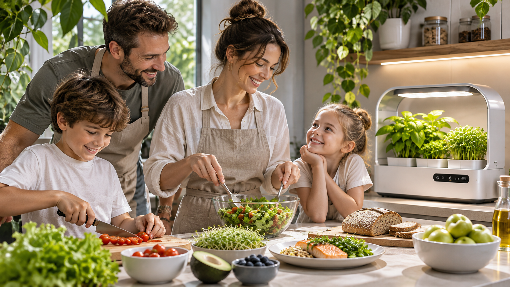
ПОТРЕТ ПОТРЕБИТЕЛЯ
Семья и здоровое питание
Родители с детьми, домашняя кухня, свежая зелень и совместные полезные привычки.
Скачать портрет PDF ↗Интеллектуальная домашняя ферма. Технологии для здорового питания и совместного выращивания зелени всей семьёй.
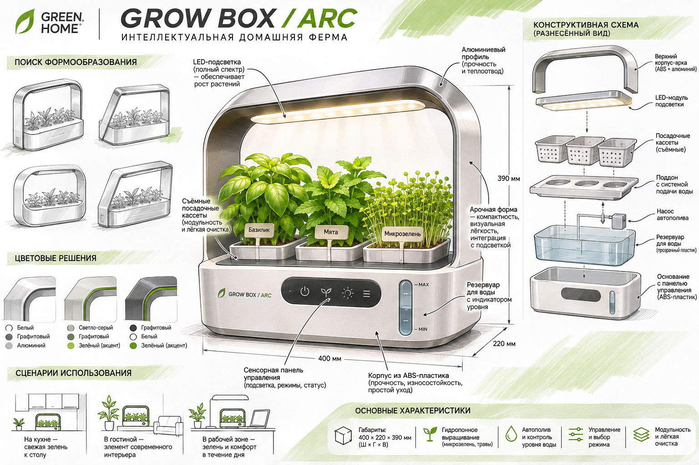
Арочная световая конструкция, модульные кассеты и компактное основание формируют узнаваемый силуэт устройства для городской квартиры.
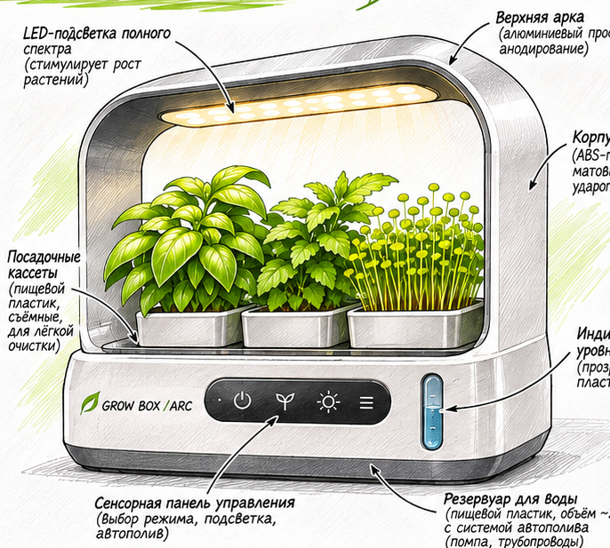
Встроенная LED-подсветка, автоматический полив, съёмные посадочные модули, контроль уровня воды и сенсорное управление.
Концептуальная визуализация. Технические узлы требуют инженерной проверки.
Материалы, созданные в ходе разработки: портрет потребителя, стайлборд и направления референсов.

Родители с детьми, домашняя кухня, свежая зелень и совместные полезные привычки.
Скачать портрет PDF ↗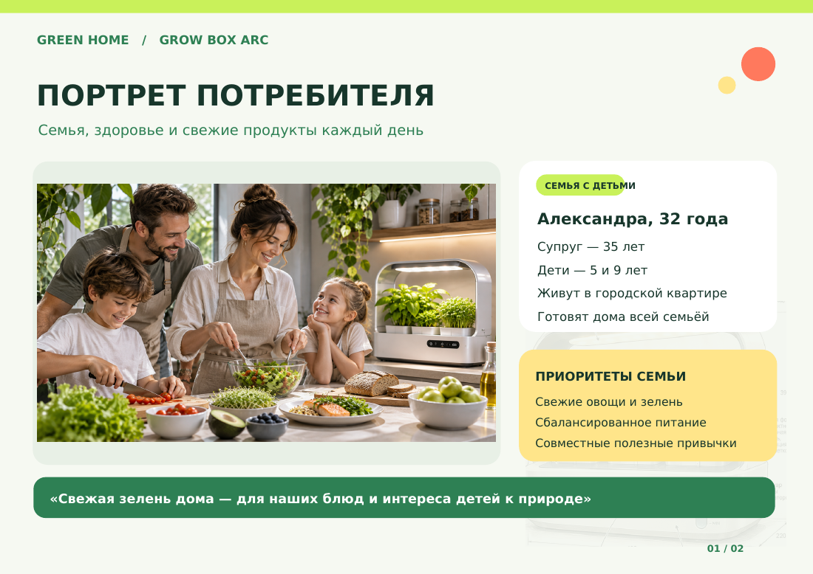
Светлый интерьер, графитовые детали, природный зелёный и технологичные поверхности.
Скачать стайлборд PDF ↗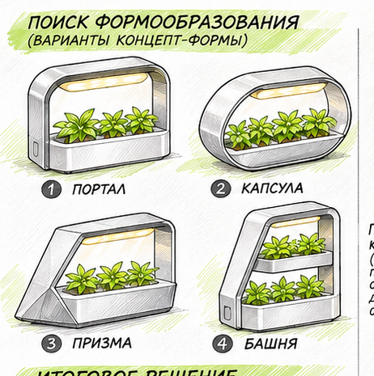
Арка, капсула, призма и башня как разные направления поиска формы.
Скачать референсы PDF ↗Карандашные построения, контур линером, тональные маркеры и зелёные акценты.
Портал, капсула, призма и башня; выбранное решение ARC.
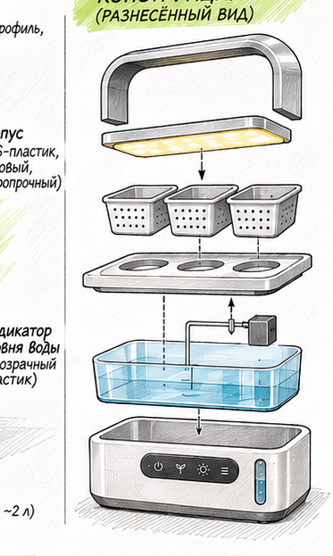
Арка, световой модуль, посадочные кассеты, поддон, помпа, резервуар и основание.
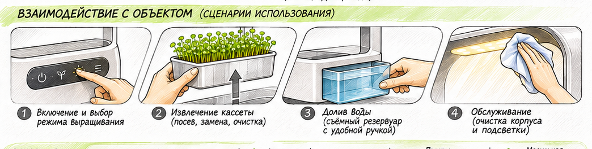
Включение, извлечение кассет, долив воды и очистка устройства.
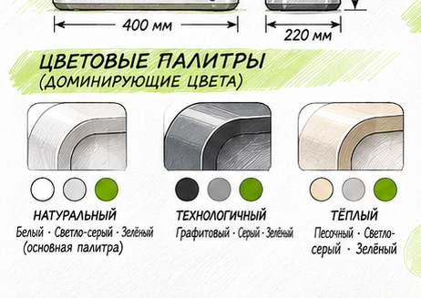
Натуральное, технологичное и тёплое; доминирующие оттенки обозначены.
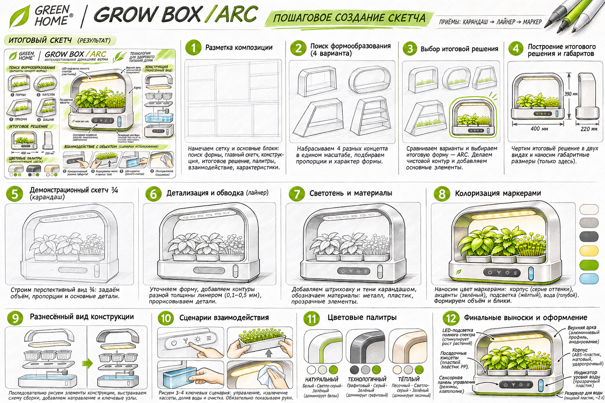
От компоновки листа до линеров, маркеров, выносок и готовой конкурсной композиции.
Нажмите на изображение, чтобы рассмотреть его в полном размере.
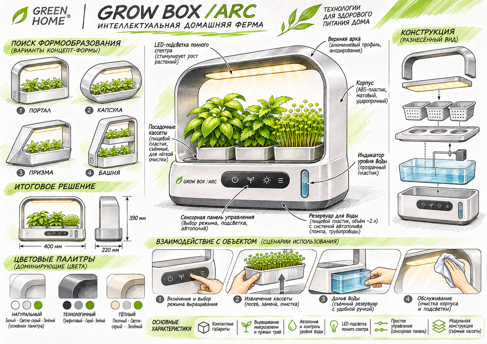
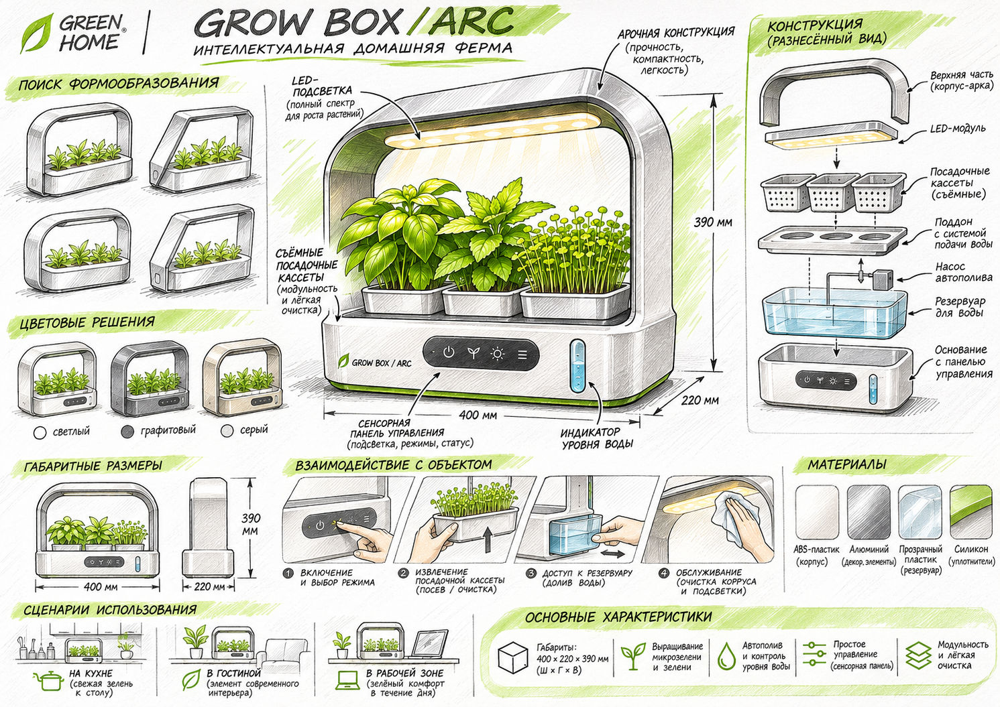
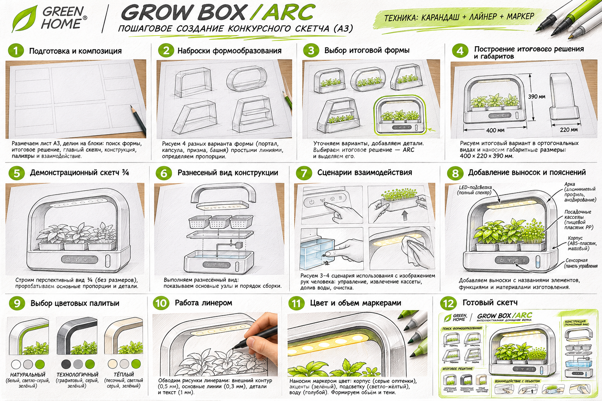
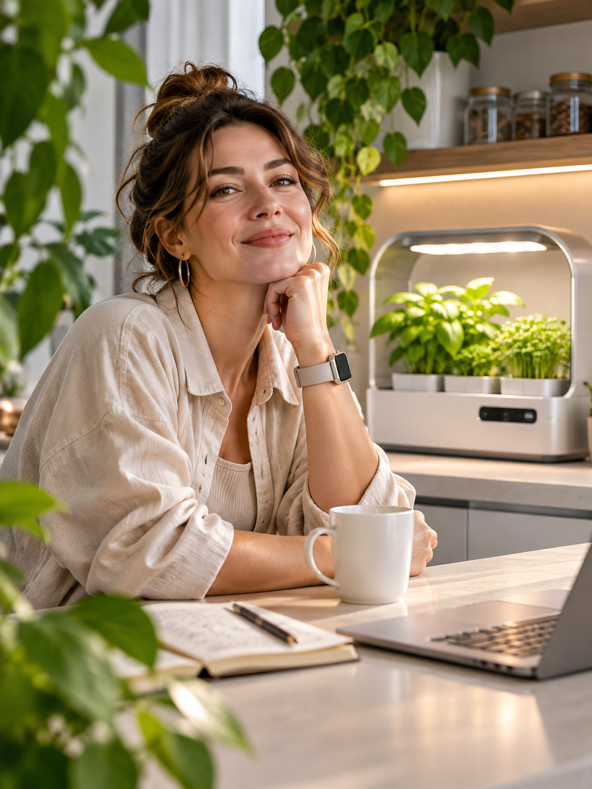
Полный комплект слайдов 16:9, подготовленный для модуля А. Доступны PDF для просмотра и PowerPoint для редактирования.